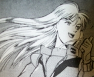
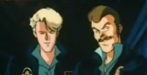
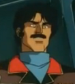

Earth Federation Patrols Earth Federation Patrols
 The Desert Eagles A team of hotshot pilots who refuse to be given more powerful mobile suits, the Desert Eagles became famous for their expert defense of Honolulu early in the war, and have since been stationed in the American front, doing repeated raids deep into Zeon airspace. Led by lieutenant Amy Bauer-Meister, they are known for their daring and reckless maneuvers, their Tin Cods outflying faster and more maneuverable Dopps on a regular basis.  The Invincible Third Team Growing famous amongst the forces of South America, the Invincible Third have fought in many skirmishes with the Zeon forces in Mexico, and were recently given new GMs as upgrades from their old stolen Zaku IIs. Known to have a penchant for drinking and partying, the third is never without a dull moment, but quick to be brought back to the seriousness of the battlefield. |